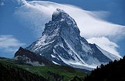

This website is about world mountains. Mountains are formed by slow but gigantic movements of the earth's crust (The outer layer of the Earth).
The Earth's crust is made up of 6 huge slabs called plates, which fit together like a jigsaw puzzle. When two slabs of the earth's crust smash into each other the land can be pushed upwards, forming mountains. Many of the greatest mountain ranges of the world have formed because of enormous collisions between continents. Some of this kind of activity has led to the creation of Stratovolcanoes, the likes of Fujiyama and Kilimanjaro.